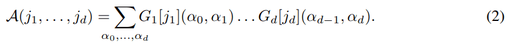
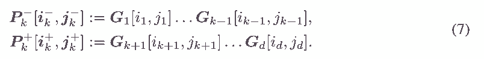

Тензоризация нейронных сетей
Автор: А. Новиков, Д. Подоприхин, А. Осокин, Д. Ветров
Источник:
https://proceedings.neurips.cc/paper/2015/hash/6855456e2fe46a9d49d3d3af4f57443d-Abstract.html
Аннотация
Глубокие нейронные сети в настоящее время демонстрируют современную производительность в нескольких областях. В то же время модели этого класса очень требовательны к условиям эксплуатации. вычислительных ресурсов. В частности, требуется большой объем памяти. обычно используемыми полносвязными слоями, что затрудняет использование моделей на младшие устройства и прекращение дальнейшего увеличения размера модели. В этой статье мы конвертируем плотные весовые матрицы полносвязных слоев в Tensor Формат Train [17] такой, что количество параметров уменьшается в огромный раз и при этом сохраняется выразительная сила слоя. Особенно, для сетей Very Deep VGG [21] мы сообщаем коэффициент сжатия плотная весовая матрица полносвязного слоя до 200000 раз, приводящая к коэффициент сжатия всей сети до 7 раз
Введение
Глубокие нейронные сети в настоящее время демонстрируют современную производительность во многих областях крупномасштабного машинного обучения, таких как компьютерное зрение, распознавание речи, обработка текста и т. д. Эти прогресс стал возможен благодаря алгоритмическим достижениям, большому количеству доступных данных, и современное оборудование. Например, сверточные нейронные сети (CNN) [13, 21] показывают большим маржинальная превосходная производительность в задаче классификации изображений. Эти модели имеют тысячи узлы и миллионы обучаемых параметров и обучаются с использованием миллионов изображений [19] на мощных Графические процессоры (GPU).
Необходимость дорогостоящего оборудования и длительное время обработки являются факторами, усложняющими применение таких моделей на обычных настольных компьютерах и портативных устройствах. Следовательно, большая количество работ пытались снизить как требования к оборудованию (например, требования к памяти), так и запуск раз (см. раздел 2).
В этой статье мы рассматриваем, вероятно, наиболее часто используемый слой нейронных сетей: полносвязный слой. Этот уровень состоит в линейном преобразовании многомерного входного сигнала в выходной сигнал большой размерности с большой плотной матрицей, определяющей преобразование. Например, в современных CNN размеры входных и выходных сигналов полносвязных слоев равны порядка тысяч, доведя число параметров полносвязных слоев до миллионы.
Мы используем компактный мультилинейный формат – Tensor-Train (TT-format) [17] – для представления плотных весовая матрица полносвязных слоев с использованием нескольких параметров, сохраняя при этом достаточную гибкость для выполнения преобразований сигналов. Полученный слой совместим с существующим тренировочным алгоритмы для нейронных сетей, потому что все производные, требуемые алгоритмом обратного распространения [18], могут быть вычислены с использованием свойств TT-формата. Назовем получившийся слой TT-уровень, а сеть с одним или несколькими TT-уровнями — TensorNet.
Мы применяем наш метод к популярным сетевым архитектурам, предложенным для нескольких наборов данных разных шкалы: MNIST [15], CIFAR-10 [12], ImageNet [13]. Экспериментально покажем, что сети со слоями TT соответствуют производительности их несжатых аналогов, но требуют до в 200 000 раз меньше параметров, уменьшая размер всей сети в 7 раз.
Оставшаяся часть теста организована следующим образом. Мы начнем с обзора родственной работы в гл. 2. Мы вводим необходимые обозначения и рассматриваем формат Tensor Train (TT) в разд. 3. В разд. 4 мы применяем формат ТТ к матрице весов полносвязного слоя, а в разд. 5 вывести все уравнения, необходимые для применения алгоритма обратного распространения. В разд. 6 мы представляем экспериментальная оценка наших идей с последующим обсуждением в гл. 7.
Связанные с работой
При достаточном количестве обучающих данных большие модели обычно превосходят более мелкие. Однако современные нейронные сети достигли аппаратных пределов как с точки зрения вычислительной мощности, так и память.
В частности, современные сети достигли предела памяти при 89% [21] или даже 100% [25] памяти. занимают веса полносвязных слоев, поэтому неудивительно, что многочисленные попытки были сделаны, чтобы сделать полносвязные слои более компактными. Один из самых прямолинейных подходов заключается в использовании низкорангового представления весовых матриц. Недавние исследования показывают, что весовая матрица полносвязного слоя сильно избыточна, и за счет ограничения ранга ее матрицы можно значительно уменьшить количество параметров без значительного снижения прогнозируемой точности [6, 20, 25].
Альтернативный подход к проблеме сжатия модели состоит в том, чтобы связать случайные подмножества весов с использованием специальных методов хеширования [4]. Авторы сообщили о коэффициенте сжатия 8 для двухслойной сети в наборе данных MNIST без потери точности. Потребление памяти также может быть уменьшается за счет использования более низкой численной точности [1] или разрешения меньшего количества возможных тщательно выбранных значений параметров [9].
В нашей статье мы обобщаем идеи низкого ранга. Вместо поиска низкоранговой аппроксимации весовую матрицу мы рассматриваем как многомерный тензор и применяем декомпозицию Tensor Train алгоритм [17]. Эта структура уже была успешно применена к нескольким системам обработки данных. задачи, т. грамм. [16, 27].
Матричное и тензорное разложения недавно использовались для ускорения времени вывода CNN [7, 14]. Пока мы фокусируемся на полносвязных слоях, Лебедев и др. [14] использовали CP-разложение для сжатия 4-мерного ядра свертки, а затем использовали свойства разложения для ускорения времени вывода. Эта работа разделяет тот же дух с нашим методом и подходами можно легко комбинировать.
Гилбоа и др. использовать свойства произведения Кронекера матриц для выполнения быстрого умножения матриц на вектор [8]. Эти матрицы имеют ту же структуру, что и TT-матрицы с единичными TT-рангами.
По сравнению с форматом Такера [23] и каноническим форматом [3], формат TT невосприимчив к проклятию размерности, а его алгоритмы надежны. По сравнению с форматом Hierarchical Tucker [11], TT очень похож, но имеет более простые алгоритмы для основных операций.
ТТ-формат
На протяжении всей статьи мы работаем с массивами различной размерности. Одномерные массивы будем называть векторами, двумерные массивы – матрицами, массивы более высоких размерностей – тензорами. Жирные строчные буквы (например, a) обозначают векторы, обычные строчные буквы (например, a(i) = ai) – элементы вектора, жирные прописные буквы (например, A) – матрицы, обычные строчные буквы (например, A(i, j )) – матричные элементы, каллиграфические жирные прописные буквы (например, A) – для тензоров и обычных каллиграфических прописных букв (например, A(i) = A(i1, . . . , id)) – тензорные элементы, где d – размерность тензора A.
Мы будем называть массивы явными, чтобы выделить случаи, когда они хранятся явно, т.е. е. перечислением всех элементов.
Говорят, что d-мерный массив (тензор) представлен в TT-формате [17], если для каждой размерности k = 1, . . . , d и для каждого возможного значения индекса k-й размерности jk = 1, . . . , nk существует матрица Gk[jk] такая, что все элементы можно вычислить как следующее матричное произведение:
Все матрицы Gk[jk], относящиеся к одной и той же размерности k, должны иметь одинаковый размер rk 1 rk. Значения r0 и rd равны 1, чтобы сохранить матричное произведение (1) размера 1 1. В дальнейшем мы будем называть представление тензора в TT-формате TT-представлением или TT-разложением. Последовательность {rk}d называется TT-рангами TT-представления A (или рангами для краткости), ее максимум – максимальным TT-рангом TT-представления A: r = maxk= 0,...,d рк. Наборы матриц размерности (Gk[jk])nk (технически трехмерные массивы Gk) называются ядрами.
Оселедец [17, Th. 2.1] показывает, что для произвольного тензора TT-представление существует, но не единственно. Ранги среди разных ТТ-представлений могут различаться, и естественно искать представление с самыми низкими рангами.
Мы используем символы Gk[jk](αk 1, αk) для обозначения элемента матрицы Gk[jk] в позиции (αk 1, αk), где αk 1 = 1, . . . , rk 1, αk = 1, . . . , рк. Уравнение (1) можно эквивалентно переписать в виде суммы произведений элементов сердечников:

Привлекательным свойством TT-разложения является возможность эффективно выполнять несколько типов операций над тензорами, если они представлены в TT-формате: основные операции линейной алгебры, такие как сложение константы и умножение на константу, суммирование поэлементное произведение тензоров (результатами этих операций являются тензоры в ТТ-формате, как правило, с повышенными рангами); вычисление глобальных характеристик тензора, таких как сумма всех элементов и норма Фробениуса. Подробное описание всех поддерживаемых операций см. в [17].
3.1 TT-представления для векторов и матриц
Прямое применение TT-разложения к матрице (двумерному тензору) совпадает с форматом матрицы низкого ранга, а прямое TT-разложение вектора эквивалентно явному хранения его элементов. Для эффективной работы с большими векторами и матрицами формат ТТ для них определяется особым образом. Рассмотрим вектор b ∈ RN , где N = Qd k=1 nk. Можно установить биекцию µ между координатой ` ∈ {1, . . . , N} тензора b и d-мерного векторного индекса µ(`) = (µ1(`),...,µd(`)) соответствующего тензора B, где µk(`) ∈ {1, . . . , нк}. Затем тензор B определяется соответствующими элементами вектора: B(µ(`)) = b`. Построение TT-представления B позволяет нам установить компактный формат для вектора b. Мы относимся к нему как к ТТ-вектор.
Теперь определим TT-представление матрицы W ∈ RM×N , где M = Qd k=1 mk и N = Qd k=1 nk. Пусть биекции ν(t) = (ν1(t),..., νd(t)) и µ(`) = (µ1(`),..., µd(`)) отображают индексы строк и столбцов t и ` матрицы W к d-мерным векторам-индексам, k-е измерения которых имеют длину mk и nk соответственно, k = 1, . . . , д. Из матрицы W можно составить d-мерный тензор W, k-я размерность которого имеет длину mknk и индексируется набором (νk(t), µk(`)). Затем тензор W можно преобразовать в формат TT:
Все операции, доступные для TT-тензоров, применимы и к TT-векторам, и к TT-матрицам (например, можно эффективно суммировать две TT-матрицы и получить результат в TT-формате). Кроме того, формат ТТ позволяет эффективно выполнять матрично-векторное (matrix-by-matrix) произведение. Если бы только один из операндов был в формате TT, результатом был бы явный вектор (матрица); если оба операнда в формате TT, операция будет еще более эффективной, и результат будет выдан также в формате TT (как правило, с увеличенными рангами). Для случая явного векторного произведения TT-матрицы c = W b вычислительная сложность равна O(d r2 m max{M, N}), где d — число ядер TT-матрицы W, m = maxk=1,...,d mk, r — максимальный ранг, N = Qd k=1 nk — длина вектора b.
Ранги и, соответственно, эффективность TT-формата для вектора (матрицы) зависят от выбора отображения µ(`) (отображений ν(t) и µ(`)) между элементами вектора (матрицы) и лежащие в основе тензорные элементы. В дальнейшем мы используем команду 1 изменения формы MATLAB для столбцов, чтобы сформировать d-мерный тензор из данных (например, из многоканального изображения), но можно выбрать другое отображение.
4 ТТ-слой
В этом разделе мы вводим TT-слой нейронной сети. Короче говоря, TT-слой — это полносвязный слой с весовой матрицей, хранящейся в TT-формате. Мы будем называть нейронную сеть с одним или несколькими TT-слоями TensorNet.
Полносвязные слои применяют линейное преобразование к N -мерному входному вектору x:

где весовая матрица W ∈ RM×N и вектор смещения b ∈ RM определяют преобразование.
ТТ-слой состоит в хранении весов полносвязного слоя W в ТТ-формате, что позволяет использовать сотни тысяч (или даже миллионы) скрытых единиц при умеренном количестве параметров. Для управления количеством параметров можно варьировать количество скрытых единиц, а также TT-ранги весовой матрицы.
TT-слой преобразует d-мерный тензор X (сформированный из соответствующего вектора x) в d-мерный тензор Y (соответствующий выходному вектору y). Предположим, что весовая матрица W представлена в TT-формате с ядрами Gk[ik, jk]. Линейное преобразование (4) полносвязного слоя можно выразить в тензорной форме:
Прямое применение операции TT-matrix-by-vector для уравнения. (5) дает вычислительную сложность прямого прохода O(dr2m max{m, n}d) = O(dr2m max{M, N}).
5 Обучение
Нейронные сети обычно обучаются с помощью алгоритма стохастического градиентного спуска, где градиент вычисляется с использованием процедуры обратного распространения [18]. Обратное распространение позволяет вычислить градиент функции потерь L по всем параметрам сети. Метод начинается с вычисления градиента L относительно. выход последнего слоя и последовательно проходит через слои в обратном порядке, вычисляя градиент относительно. параметры и входные данные слоя, использующие градиенты, вычисленные ранее. Применительно к полносвязным слоям (4) метод обратного распространения вычисляет градиенты относительно. вход x и параметры W и b при заданных градиентах ∂L по отношению к выходу y:

В дальнейшем мы получим градиенты, необходимые для использования алгоритма обратного распространения с TT-слоем. Чтобы вычислить градиент функции потерь w.r.t. вектор смещения b и w.r.t. входной вектор x можно использовать уравнения (6). Последнее можно применить, используя произведение матрицы на вектор (где матрица в формате TT) со сложностью O(dr2n max{m, n}d) = O(dr2n max{M, N}) .
Таблица 1: Сравнение асимптотической сложности и использования памяти M × N TT-слоя и M × N полносвязного слоя (FC). Формы входного и выходного тензора равны m1 × . . . × md и n1 × . . . × nd соответственно (m = maxk=1...d mk), r — максимальный TT-ранг.
Чтобы выполнить шаг стохастического градиентного спуска, можно использовать уравнение (6) для вычисления градиента функции потерь относительно. матрицу весов W , преобразовать матрицу градиента в формат TT (алгоритмом TT-SVD [17]), а затем добавить этот градиент (умноженный на размер шага) к текущей оценке матрицы весов: Wk+1 = Wk + γk ∂L . Однако прямое вычисление ∂L требует O(MN ) памяти. Лучший способ узнать параметры TensorNet — вычислить градиент функции потерь непосредственно относительно. ядра TT-представления W .
В дальнейшем для префиксных и постфиксных последовательностей индексов используются сокращенные обозначения: i−k := (i1,...,ik−1), i+ := (ik+1,...,id), i = ( i−, ik, i+). Введем также обозначения для частичных основных продуктов:

Перепишем теперь определение преобразования TT-слоя (5) для любого k = 2, . . . , д - 1:
Градиент функции потерь L w.r.t. до k-го ядра в позиции [˜ik, ˜jk] можно вычислить по цепному правилу:
Векторы Rk[j−, ˜jk, i+] для всех возможных значений k, j−, ˜jk и i+ могут быть вычислены с помощью динамического программирования (путем подстановки сумм относительно каждого jk+1,...,jd внутрь уравнение и суммирование одного индекса за раз) в O (dr ^ 2 * m max {M, N}). Подставляя эти векторы в (10) и используя
Рисунок 1: Эксперимент с набором данных MNIST. Мы используем двухслойную нейронную сеть и заменяем первые 1024 1024 полносвязных слоя на TT-слой (сплошные линии) и на слой, основанный на декомпозиции ранга матрицы (штриховая линия). Сплошные линии разных цветов соответствуют различным способам преобразования входных и выходных векторов в тензоры (формы указаны в легенде). Чтобы получить точки графиков, мы варьируем максимальный TT-ранг или ранг матрицы.
(опять же) динамическое программирование дает нам все необходимые матрицы для суммирования (9). Общая вычислительная сложность обратного прохода составляет O(d2 r4 m max{M, N }).
Представленный алгоритм сводится к последовательности матричных произведений и перестановок измерений и, таким образом, может быть ускорен на устройстве с графическим процессором.
6 Эксперименты
6.1 Параметры слоя ТТ
В этом эксперименте мы исследуем свойства TT-слоя и сравниваем различные стратегии задания его параметров: размерности тензоров, представляющих вход/выход слоя, и TT-ранги сжатой весовой матрицы. Мы проводим эксперимент на наборе данных MNIST [15] для задачи распознавания рукописных цифр. В качестве базовой линии мы используем нейронную сеть с двумя полносвязными слоями (1024 скрытых элемента) и выпрямленным линейным элементом (ReLU), достигающим ошибки 1,9% на тестовом наборе. Для получения дополнительных возможностей изменения формы мы изменяем размер исходных изображений 28 × 28 до 32 × 32.
Обучаем несколько сетей, отличающихся параметрами одного ТТ-слоя. Сети содержат следующие слои: TT-слой с весовой матрицей размера 1024 1024, ReLU, полносвязный слой с весовой матрицей размера 1024 10. Мы тестируем разные способы переформирования входных/выходных тензоров и пробуем разные ранги. слоя ТТ. В качестве простой базовой линии сжатия вместо TT-слоя используется полносвязный слой, для которого ранг весовой матрицы ограничен (реализуется следующим образом: два последовательных полносвязных слоя с весовыми матрицами размеров 1024 r и r 1024, где r управляет рангом матрицы и коэффициентом сжатия). Результаты эксперимента показаны на рисунке 1. Мы пришли к выводу, что TT-ранги обеспечивают гораздо лучшую гибкость, чем матричные ранги, при применении того же уровня сжатия. Кроме того, мы наблюдаем, что TT-слои со слишком малым количеством значений для каждого тензорного измерения и со слишком малым количеством измерений работают хуже, чем их более сбалансированные аналоги.
Сравнение с HashedNet [4]. Мы рассматриваем двухслойную нейронную сеть с 1024 скрытыми элементами и заменяем оба полносвязных слоя на TT-слои. Установив все TT-ранги в сети на 8, мы достигли ошибки теста 1,6% с 12 602 параметрами в целом, а установив все TT-ранги на 6, ошибку теста 1,9% с 7 698 параметрами. Чен и др. [4] сообщают о результатах той же архитектуры. Связав случайные подмножества весов, они сжали сеть в 64 раза до 12 720 параметров в сумме с ошибкой теста, равной 2,79%.
6.2 CIFAR-10
Набор данных CIFAR-10 [12] состоит из 32 32 3-канальных изображений, отнесенных к 10 различным классам: самолет, автомобиль, птица, кошка, олень, собака, лягушка, лошадь, корабль, грузовик. Набор данных содержит 50 000 поездов и 10 000 тестовых изображений. Следуя [10], мы предварительно обрабатываем изображения, вычитая среднее значение и выполняя глобальную нормализацию контраста и отбеливание ZCA.
В качестве основы мы используем CIFAR-10 Quick [22] CNN, который состоит из сверточных слоев, слоев объединения и нелинейности, за которыми следуют два полносвязных слоя размерами 1024 × 64 и 64 × 10. Мы фиксируем сверточную часть сети и заменить полносвязную часть на 1024 × N TT-уровень.
Таблица 2: Замена полносвязных слоев слоями TT в сетях vgg-16 и vgg-19 в наборе данных ImageNet. FC обозначает полносвязный слой; TTQ обозначает уровень TT со всеми рангами TT, равными «Q»; MRQ обозначает полносвязный слой с рангом матрицы, ограниченным «Q». Мы сообщаем о степени сжатия матриц TT-слоев и всей сети во втором, третьем и четвертом столбцах.
За которым следует ReLU и полносвязный слой N 10. При N = 3125 скрытых единиц (против 64 в исходной сети) мы достигаем ошибки теста 23,13% без тонкой настройки, что немного лучше, чем ошибка теста базовой линии (23,25%). Слой TT обрабатывал входные и выходные векторы как тензоры 4 x 4 x 4 x 4 x 4 и 5 x 5 x 5 x 5 x 5 соответственно. Все ранги TT равны 8, что делает количество параметров на уровне TT равным 4 160. Степень сжатия TensorNet по сравнению с базовым уровнем относительно. все параметры 1.24. Кроме того, замена обоих полносвязных слоев на TT-слои дает погрешность теста 24,39 % и уменьшает количество параметров матриц полносвязных слоев в 11,9 раза, а общее число параметров — в 1,7 раза.
Для сравнения, в [6] полносвязные слои в CNN CIFAR-10 были сжаты не более чем в 4,7 раза с потерей точности около 2%.
6.2.1 Широкая и мелкая сеть
При достаточном количестве скрытых элементов даже нейронная сеть с двумя полносвязными слоями и сигмовидной нелинейностью может аппроксимировать любую границу решения [5]. Традиционно очень широкие неглубокие сети не рассматриваются из-за высоких требований к вычислительным ресурсам и памяти, а также из-за риска переобучения. TensorNet потенциально может решить обе проблемы. Мы используем трехслойный TensorNet следующей архитектуры: TT-слой с матрицей весов размером 3 072 262 144, ReLU, TT-слой с матрицей весов размером 262 144 4 096, ReLU, полносвязный слой с матрицей весов размером 4 096 10. Мы сообщаем об ошибке теста 31,47%, что является (насколько нам известно) лучшим результатом, достигнутым несвёрточной нейронной сетью.
6.3 ImageNet
В этом эксперименте мы оцениваем TT-слои в крупномасштабной задаче. Мы рассматриваем набор данных ImageNet ILSVRC-2012 класса 1000 [19], который состоит из 1,2 миллиона обучающих изображений и 50 000 проверочных изображений. Мы используем глубокие CNN vgg-16 и vgg-19 [21] в качестве эталонных моделей2. Обе сети состоят из двух частей: сверточной и полносвязной. В обеих сетях вторая часть состоит из 3 полносвязных слоев с весовыми матрицами размерами 25088×4096, 4096×4096 и 4096×1000.
В каждой сети мы заменяем первый полносвязный слой на TT-уровень. Для этого мы преобразуем 25088-мерные входные векторы в тензоры размера 2 x 7x 8 x 8 x 7 x 4, а 4096-мерные выходные векторы - в тензоры размера 4 x 4 x 4 x 4 x 4 4 , Остальные полносвязные слои инициализируются случайным образом. Параметры сверточных частей остаются фиксированными, как это было обучено Симоняном и Зиссерманом [21]. Мы обучаем слой TT и полносвязные слои на обучающем наборе. В таблице 2 мы варьируем ранги уровня TT и сообщаем о коэффициенте сжатия уровней TT (по сравнению с исходным полносвязным уровнем), результирующем коэффициенте сжатия всей сети, а также о первых 1 и 5 основных ошибках. на проверочном наборе. Кроме того, мы заменяем второй полносвязный слой на TT-слой. В качестве базового метода сжатия мы ограничиваем матричный ранг матрицы весов первого полносвязного слоя, используя подход [2].
Таблица 3: Время вывода для полносвязного уровня 25088 4096 и соответствующего ему уровня TT со всеми рангами TT, равными 4. Использование памяти для прямой передачи одного изображения составляет 392 МБ для полносвязного уровня и 0,766 МБ для TT -слой.
Из табл. 2 видно, что TT-слою в лучшем случае удается уменьшить количество параметров в матрице W самого большого полносвязного слоя в 194 622 раза (с 25088 4096 параметров до 528) при увеличении топ-5 ошибок с 11,2 до 11,5. Коэффициент сжатия всей сети остается на уровне 3,9, поскольку ТТ-уровень перестает быть узким местом хранения. При сжатии самого большого из оставшихся слоев коэффициент сжатия увеличивается до 7,4. Базовый метод при обеспечении аналогичных степеней сжатия значительно увеличивает погрешность.
Для сравнения рассмотрим результаты [26], полученные для сжатия полносвязных слоев сети типа Крижевского [13] методом Fastfood. Модель достигает коэффициента сжатия 2-3 без уменьшения ошибки сети.
6.4 Детали реализации
Во всех экспериментах мы используем наше расширение MATLAB3 фреймворка MatConvNet4 [24]. Для операций, связанных с форматом TT, мы также используем TT-Toolbox5, реализованный в MATLAB. Эксперименты проводились на компьютере с четырехъядерным процессором Intel Core i5-4460, 16 ГБ оперативной памяти и одним графическим процессором NVidia Geforce GTX 980. Мы сообщаем о времени выполнения и использовании памяти при прямом проходе уровня TT и базового полносвязного уровня в таблице 3.
Мы обучаем все сети стохастическим градиентным спуском с импульсом (коэффициент 0,9). Все параметры TT- и полносвязного слоев инициализируем гауссовским шумом и накладываем на них L2-регуляризацию (вес 0,0005).
7 Обсуждение и будущая работа
Недавние исследования указывают на высокую избыточность в текущей параметризации нейронной сети. Чтобы использовать эту избыточность, мы предлагаем использовать структуру TT-декомпозиции на весовой матрице полносвязного слоя и использовать ядра декомпозиции в качестве параметров слоя. Это позволяет нам обучать полносвязные слои, сжатые до 200 000 по сравнению с явной параметризацией без существенного увеличения ошибки. Наши эксперименты показывают, что можно зафиксировать сложные зависимости в данных, используя гораздо более компактные представления. С другой стороны, становится возможным использовать гораздо более широкие слои, чем были доступны ранее, и предварительные эксперименты с набором данных CIFAR-10 показывают, что широкие и неглубокие сети TensorNet достигают многообещающих результатов (устанавливая новый уровень техники для несвёрточных нейронных сетей).
Еще одним привлекательным свойством слоя TT является более быстрое время вывода (по сравнению с соответствующим полносвязным слоем). В целом, широкая и неглубокая TensorNet может стать эффективной моделью времени и памяти для использования в приложениях реального времени и на мобильных устройствах.
Основным ограничивающим фактором для размера полносвязного слоя M x N является число его параметров M x N. Ограничивающим фактором для M N TT-слоя является максимальный линейный размер max {M, N}. В будущем мы планируем рассмотреть входы и выходы слоев в формате TT, что полностью устранит зависимость от M и N и позволит использовать миллиарды скрытых единиц в TT-слое.
Благодарности. Мы хотели бы поблагодарить Ивана Оселедца за ценные обсуждения. А. Новиков, Д. Подоприхин, Д. Ветров выполнены при поддержке проекта РФФИ № 15-31-20596 (мол-а-вед) и Microsoft: Объединенный исследовательский центр МГУ (RPD 1053945). А. Осокина поддержал Совместный центр MSR-INRIA. Результаты применения tensor toolbox (в разделе 6) поддержаны РНФ № 14-11-00659.
Литература
- К. Асанови и Н. Морган, «Экспериментальное определение требований к точности для обучения искусственных нейронных сетей с обратным распространением», Международный институт компьютерных наук, Tech. Респ., 1991.
- Дж. Ба и Р. Каруана, «Действительно ли глубокие сети должны быть глубокими?» в Достижениях в области систем обработки нейронной информации 27 (NIPS), 2014 г., стр. 2654–2662.
- Дж. Д. Кэролл и Дж. Дж. Чанг, «Анализ индивидуальных различий в многомерном шкалировании с помощью n-стороннего обобщения разложения Эккарта-Юнга», Психометрика, т. 1, с. 35, стр. 283–319, 1970.
- В. Чен, Дж. Т. Уилсон, С. Тайри, К. К. Вайнбергер и Ю. Чен, «Сжатие нейронных сетей с помощью хэш-трюка», Международная конференция по машинному обучению (ICML), 2015 г., стр. 2285–2294.
- Цыбенко Г. Аппроксимация суперпозицией сигмоидальной функции // Математика управления, сигналов и систем. 1989. С. 303–314.
- М. Денил, Б. Шакиби, Л. Дин, М. Ранзато и Н. де Фрейтас, «Прогнозирование параметров в глубоком обучении», в Достижениях в системах обработки нейронной информации 26 (NIPS), 2013, стр. 2148 –2156.
- E. Denton, W. Zaremba, J. Bruna, Y. LeCun и R. Fergus, «Использование линейной структуры в сверточных сетях для эффективной оценки», в Достижениях в системах обработки нейронной информации 27 (NIPS), 2014, стр. 1269–1277.
- Э. Гилбоа, Ю. Саати и Дж. П. Каннингем, «Масштабирование многомерного вывода для структурированных гауссовских процессов», препринт arXiv, №. 1209.4120, 2012.
- Ю. Гонг, Л. Лю, М. Ян и Л. Бурдев, «Сжатие глубоких сверточных сетей с использованием векторного квантования», препринт arXiv, №. 1412.6115, 2014.
- И. Дж. Гудфеллоу, Д. Уорд-Фарли, М. Мирза, А. Курвиль и Ю. Бенжио, «Сети Maxout», Международная конференция по машинному обучению (ICML), 2013 г., стр. 1319–1327.
- В. Хакбуш и С. Кун, "Новая схема тензорного представления", J. Fourier Anal. Заявл., том. 15, стр. 706–722, 2009.
- А. Крижевский, «Изучение нескольких слоев функций из крошечных изображений», магистерская диссертация, факультет компьютерных наук, Университет Торонто, 2009 г.
- А. Крижевский, И. Суцкевер и Г. Э. Хинтон, «Классификация Imagenet с помощью глубоких сверточных нейронных сетей», в Достижениях в области нейронных систем обработки информации 25 (NIPS), 2012, стр. 1097–1105.
- В. Лебедев, Ю. Ганин, М. Рахуба, И. Оселедец, В. Лемпицкий, «Ускорение сверточных нейронных сетей с использованием точной CP-декомпозиции», Международная конференция по обучающим представлениям (ICLR), 2014.
- Ю. ЛеКун, К. Кортес и К. Дж. К. Берджес, «База данных рукописных цифр MNIST», 1998 г.
- А. Новиков, А. Родоманов, А. Осокин, Д. Ветров, «Помещение MRF в тензорный поезд», Международная конференция по машинному обучению (ICML), 2014 г., стр. 811–819.
- И. В. Оселедец, "Tensor-Train decomposition", SIAM J. Scientific Computing, vol. 33, нет. 5, стр. 2295–2317, 2011.
- Д. Э. Румельхарт, Г. Э. Хинтон и Р. Дж. Уильямс, «Обучение представлений с помощью обратного распространения ошибок». Природа, том. 323, нет. 6088, стр. 533–536, 1986.
- О. Русаковский, Дж. Дэн, Х. Су, Дж. Краузе, С. Сатиш, С. Ма, З. Хуанг, А. Карпати, А. Хосла, М. Бернштейн, А. К. Берг и Л. Фей-Фей, «Проблема визуального распознавания большого масштаба Imagenet», Международный журнал компьютерного зрения (IJCV), 2015 г.
- Т. Н. Сайнат, Б. Кингсбери, В. Синдхвани, Э. Арисой и Б. Рамабхадран, «Матричная факторизация низкого ранга для обучения глубокой нейронной сети с многомерными выходными целями», Международная конференция по акустике, Обработка речи и сигналов (ICASSP), 2013 г., стр. 6655–6659.
- К. Симонян и А. Зиссерман, «Очень глубокие сверточные сети для крупномасштабного распознавания изображений», Международная конференция по обучающим представлениям (ICLR), 2015.
- Дж. Снук, Х. Ларошель и Р. П. Адамс, «Практическая байесовская оптимизация алгоритмов машинного обучения», Достижения в системах обработки нейронной информации 25 (NIPS), 2012 г., стр. 2951–2959.
- Л. Р. Такер, «Некоторые математические заметки о трехрежимном факторном анализе», Психометрика, т. 1, с. 31, нет. 3, стр. 279–311, 1966.
- А. Ведальди и К. Ленк, «Matconvnet — сверточные нейронные сети для MATLAB», в материалах ACM Int. конф. на Мультимедиа.
- Дж. Сюэ, Дж. Ли и Ю. Гонг, «Реструктуризация акустических моделей глубоких нейронных сетей с разложением по сингулярным значениям», в Interspeech, 2013, стр. 2365–2369.
- Z. Yang, M. Moczulski, M. Denil, N. de Freitas, A. Smola, L. Song и Z. Wang, «Жареные во фритюре коннеты», Препринт arXiv, нет. 1412.7149, 2014.
- Z. Zhang, X. Yang, I. V. Oseledets, G. E. Karniadakis, and L. Daniel, «Включение многомерной иерархической количественной оценки неопределенности с помощью ANOVA и декомпозиции тензорных последовательностей», Компьютерное проектирование интегральных схем и систем , IEEE Transactions, стр. 63–76, 2014 г.